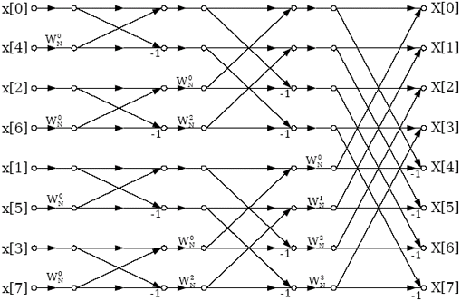

Fast Fourier Transform
The FFT is a Fast Fourier algorithm computing the DFT. If we take the 2-point DFT and 4-point DFT and generalize them to 8-point, 16-point, ..., 2r -point, we get the FFT algorithm. To compute the DFT of an N-point sequence ,it would take N2 multiplies and adds. The FFT algorithm computes the DFT using N*log N multiplies and adds.
There are many variants of the FFT algorithm. We’ll discuss one of them, the “decimation in-time” and "decimation in-frequency" FFT algorithm for sequences whose length is a power of two (N = 2r for some integer r). Below is a diagram of an 8-point FFT, where W = W8 = e−iπ/4 = (1 − i)/√2

The above structue is an example of 8 point DFT of decimation in time(DIT) FFT.
Butterflies and Bit-Reversal :- FFT algorithm decomposes the DFT into log2N stages, each of which consists of N/2 butterfly computations. Each butterfly takes two complex numbers p and q and computes from them two other numbers, p + αq and p − αq, where α is a complex number. Below is a diagram of a butterfly operation.

In the diagram of the 8-point FFT above, note that the inputs aren’t in normal order, they’re in the bizarre order,like bit reversed order.
General FFT and IFFT Algorithm N = 2r. The previously diagrammed algorithm for the 8-point FFT is easily generalized to any power of two. The input array is bit-reversed,and the butterfly coefficients can be seen to have exponents in arithmetic sequence moduloN.
For example, for N = 8, the butterfly coefficients on the last stage in the diagram are W0, W1, W2, W3, W4, W5, W6, W7. That is, powers of W in sequence. The coefficients in the previous stage have exponents 0,2,4,6,0,2,4,6, which is equivalent to the sequence 0,2,4,6,8,10,12,14 modulo 8. And the exponents in the first stage are 1,-1,1,-1,1,-1,1,-1, which is equivalent to W raised to the powers 0,4,0,4,0,4,0,4, and this is equivalent to the exponent sequence 0,4,8,12,16,20,24,28 when taken modulo 8.
The width of the butterflies (the height of the ”X’s” in the diagram) can be seen to be 1, 2, 4, ... in successive stages, and the butterflies are seen to be isolated in the first stage (groups of 1), then clustered into overlapping groups of 2 in the second stage, groups of 4 in the 3rd stage, etc. The generalization to other powers of two should be evident from the diagrams for N = 4 and N = 8.
The inverse FFT (IFFT) is identical to the FFT, except one exchanges the roles of a and A, the signs of all the exponents of W are negated, and there’s a division by N at the end. Note that the fast way to compute mod(j, N)in the C programming language, for N a power of two, is with bit-wise AND: “j&(N-1)”. This is faster than “j%N”, and it works for positive or negative j, while the latter does not.